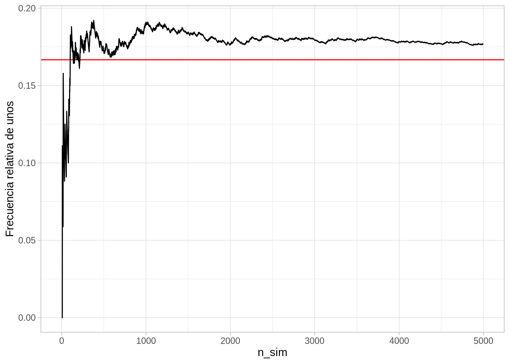

Espacios equiprobables
Si un evento \(A\) puede ocurrir de \(k\) maneras de \(n\) posibles, y es indiferente apostar a cualquiera de los \(n\) posibles resultados, entonces
\[P(A) = \frac{k}{n}\]
En esta parte comenzaremos a tratar el concepto de probabilidad de ocurrencia de eventos acerca de los que tenemos incertidumbre. Veremos que:
Históricamente, el concepto de probabilidad nació en el contexto de juegos de azar, y cómo definir apuestas ajustas o equitativas. Por ejemplo:
El argumento iría como sigue: existen 6 posibles resultados, y como el dado se tira bien y está bien hecho, entonces sería lo mismo apostar a cualquier número. Entonces, si seis personas entran al juego apostando a distintos números, cada uno pagando 1 peso, sería justo que el ganador se llevara 6 pesos.
Nótese que el criterio de “justicia” proviene de simetrías del experimento: si el dado no fuera simétrico, por ejemplo, esta sería una manera mala de definir probabilidades.
En general, una manera de difinir probabilidad es la siguiente:
Espacios equiprobables
Si un evento \(A\) puede ocurrir de \(k\) maneras de \(n\) posibles, y es indiferente apostar a cualquiera de los \(n\) posibles resultados, entonces
\[P(A) = \frac{k}{n}\]
Con este enfoque podemos resolver diversos problemas de probabilidad, por ejemplo:
¿Cuál es la probabilidad de que tiremos una suma de 9 con dos dados de seis lados?
En este caso, los resultados son pares \((x, y)\) donde \(x\) es el resultado del dado 1 y \(y\) es el resultado del dado 2. Existen 36 pares, y todos ellos son equivalentes. Para tirar un 9, tenemos que lograr alguna de las siguientes tiradas:
\[(3, 6), (4, 5), (5, 4), (6, 3)\]
De modo que la probabilidad de tirar una suma de 9 , que escribimos como \(S=9\), es
\[P(S = 9) = 4/36 = 1/9\]
Sacamos dos cartas sucesivamente de una baraja de 52 cartas, donde 26 son negras y 26 rojas. ¿Cuál es la probabilidad de que la segunda carta que saquemos sea negra? Podemos denotar como \(N_2\) el evento que sucede cuando la segunda carta que sacamos es negra. La segunda carta que sacamos puede ser cualquiera de las 52, y somos indiferentes en apostar a cualqueira de las cartas para salir en segundo lugar, así que
\[P(N_2) = 26 / 52 = 1/2\]
Estos espacios equiprobables nos dan nuestros modelos probabilísticos más simples. Están basados en simetrías del espacio de resultados.
La conexión entre experimentos reales y modelos de probabilidad, está en que si repetimos muchas veces el experimento, entonces las frecuencias relativas de ocurrencia de los eventos aproxima a las probabilidades teóricas. Por ejemplo, si tiramos muchos volados con una moneda bien balanceada, esperamos obtener alrededor de 1/2 de soles y 1/2 de águilas, y si tiramos un dado muchas veces esperamos obtener alrededor de 1/6 de las tiradas un 5, por ejemplo (bajo los modelos de resultados equiprobables correspondientes).
En realidad, esta es otra definición de probabilidad en términos de repeticiones de experimentos.
Probabilidades y frecuencias
Supongamos que repetimos una gran cantidad \(n\) de veces un experimento, y que registramos \(k_n\) = cuántas veces ocurre un evento \(A\). La probabilidad de que ocurra \(A\) es
\[\lim_{n\to\infty} \frac{k_n}{n} \to P(A), \]
es decir, \(P(A)\) el la frecuencia al largo plazo de ocurrencia de \(A\).Aunque podríamos hacer algunos experimentos físicos más reales, para este curso podemos hacer simulaciones de computadora del experimento que nos interesa.
Primero hacemos un dado. Podemos simular una tirada de dado como:
simular_dado <- function(caras = 1:6){
sample(caras, 1)
}
simular_dado()[1] 4Ahora simulamos una gran cantidad de tiradas de dado:
set.seed(199213)
n <- 5000
sims_dado <- map_df(1:n, ~ c(n_sim = .x, resultado = simular_dado()))
head(sims_dado) # A tibble: 6 × 2
n_sim resultado
<int> <int>
1 1 3
2 2 6
3 3 3
4 4 3
5 5 6
6 6 3Esta es una variable numérica, pero como toma valores enteros del uno al seis, podemos resumir con frecuencias, como si fuera categórica:
sims_dado %>%
count(resultado) %>%
mutate(frec_relativa = n / sum(n))# A tibble: 6 × 3
resultado n frec_relativa
<int> <int> <dbl>
1 1 806 0.161
2 2 814 0.163
3 3 857 0.171
4 4 898 0.180
5 5 856 0.171
6 6 769 0.154Y nuestro modelo teórico (resultados equiprobables) coincide razonablemente bien con las frecuencias observadas a largo plazo. Podemos ver cómo convergen las frecuencias relativas por ejemplo del resultado 1:
sims_dado %>%
mutate(no_unos = cumsum(resultado == 1)) %>%
mutate(frec_uno = no_unos / n_sim) %>%
filter(n_sim < 5000) %>%
ggplot(aes(x = n_sim, y = frec_uno)) +
geom_hline(yintercept = 1/6, colour = "red") +
geom_line() + ylab("Frecuencia relativa de unos")
Nótese que cuando hay pocas repeticiones podemos ver fluctuaciones considerablemente grandes de la frecuencia relativa observada de unos. Sin embargo, conforme aumentamos el tamaño de la meustra observada, esas fluctuaciones son más chicas.
Veamos otra simulación:
sims_dado <- map_df(1:n, ~ c(n_sim = .x, resultado = simular_dado()))
sims_dado %>%
mutate(no_unos = cumsum(resultado == 1)) %>%
mutate(frec_uno = no_unos / n_sim) %>%
filter(n_sim < 5000) %>%
ggplot(aes(x = n_sim, y = frec_uno)) +
geom_hline(yintercept = 1/6, colour = "red") +
geom_line() + ylab("Frecuencia relativa de unos")
¿Cómo podemos usar modelos de probablidad para describir datos observados? La idea (simplificada) es la siguiente:
Consideremos el ejemplo de los dados. Supongamos que lanzamos el dado un número no muy grande de veces, y observamos:
frecs_obs <- tibble(resultado = 1:6,
n = c(5, 7, 5, 10, 8, 5)) %>%
mutate(frec = n / sum(n))
frecs_obs %>% kable(digits = 2)| resultado | n | frec |
|---|---|---|
| 1 | 5 | 0.12 |
| 2 | 7 | 0.17 |
| 3 | 5 | 0.12 |
| 4 | 10 | 0.25 |
| 5 | 8 | 0.20 |
| 6 | 5 | 0.12 |
Y nos preguntamos si este resultado podría ser observado bajo los supuestos de nuestro modelo de probabilidad, que en este caso, es el de resultados equiprobables. Podemos por ejemplo graficar los datos junto con simulaciones del modelo, en búsqueda de desajustes:
set.seed(8834)
# una vez
sim_exp <- map_df(1:40, ~ c(id = .x, resultado = simular_dado()))
# 19 veces
sims_exp <- map_df(1:19, function(x){
sims <- map_df(1:40, ~ c(id = .x, resultado = simular_dado()) )
sims$rep <- x
sims
})frec_sims <- sims_exp %>%
group_by(rep, resultado) %>%
summarise(n = n()) %>%
mutate(frec = n / sum(n))`summarise()` has grouped output by 'rep'. You can override using the `.groups`
argument.obs_sims_tbl <- bind_rows(frec_sims, frecs_obs %>% mutate(rep = 20))
ggplot(obs_sims_tbl, aes(x = resultado, y = frec)) +
geom_col() +
facet_wrap(~rep)En este caso, no vemos ninguna característica de los datos observados que no sea consistente las fluctuaciones esperadas para un tamaño de muestra de \(n=40\).
Pregunta: ¿qué defecto le ves a esta gráfica que tiene los datos en la posición 20? ¿Cómo podríamos hacer una evaluación más apropiada de la calidad del ajuste?
Observación: como veremos, muchas veces proponemos modelos que tienen parámetros que deben ser estimados con la muestra. Este caso más común es más complejo que el explicado arriba, pero el proceso es similar.
Depende cómo planteemos nuestro experimento aleatorio, puede ser o no apropiado el modelo equiprobable. Veremos ahora algunos ejemplos donde construimos modelos no equiprobables
Supongamos que nos interesa la suma de dos tiradas de dados. Comenzamos con un modelo equiprobable sobre los resultados de cada tirada, que denotamos como \((x,y)\). Cada resultado tiene probabilidad 1/36.
Sin embargo, sólo nos interesa la suma. Contando posibles resultados podemos dar la probabilidad de cada resultado:
| Suma | Resultados | Prob |
|---|---|---|
| 2 | (1,1) | 1/36 |
| 3 | (1,2),(2,1) | 2/36 |
| 4 | (1,3),(2,2),(3,1) | 3/36 |
| 5 | (1,4),(2,3),(3,2),(4,1) | 4/36 |
| 6 | (1,5),(2,4),(3,3),(4,2),(5,1) | 5/36 |
| 7 | (1,6),(2,5),(3,4),(4,3),(5,2),(6,1) | 6/36 |
| 8 | (2,6),(3,5),(4,4),(5,3),(6,2) | 5/35 |
| 9 | (3,6),(4,5),(5,4),(6,3) | 4/36 |
| 10 | (4,6),(5,5),(6,4) | 3/36 |
| 11 | (5,6), (6,5) | 2/36 |
| 12 | (6,6) | 1/36 |
Y entonces terminamos con la siguiente distribución no equiprobable sobre las posibles sumas:
probs_suma <- tibble(suma = 2:12) %>%
mutate(prob = (6 - abs(suma - 7)) / 36)
probs_suma %>% kable(digits = 3)| suma | prob |
|---|---|
| 2 | 0.028 |
| 3 | 0.056 |
| 4 | 0.083 |
| 5 | 0.111 |
| 6 | 0.139 |
| 7 | 0.167 |
| 8 | 0.139 |
| 9 | 0.111 |
| 10 | 0.083 |
| 11 | 0.056 |
| 12 | 0.028 |
Esta distribución la podemos graficar como sigue:
g_teorica <- ggplot(probs_suma, aes(x = suma, y = prob)) +
geom_col() +
scale_x_continuous(breaks = 2:12)
g_teorica
Podríamos tirar dos dado un gran número de veces para verificar si este modelo da las probabilidades correctas (o más propiamente dicho, si estas observaciones son consistentes con el modelo de probabilidad mostrado arriba).
Tanto modelos equiprobables como la interpretación frecuentista de la probabilidad resultan en un conjunto de reglas útiles para operar con probabilidades. Estas son reglas generales que aplican independientemente de la interpretación particular de la probabilidad que utilicemos.
Asegúrate que puedes demostrar esto para un espacio equiprobable, por ejemplo.
¿Por qué es cierto esto en espacios equiprobables? ¿Y según la definición frecuentista? Usa esta regla y el ejemplo anterior para calcular la probabilidad de tirar una suma menor a 12 cuando tiramos dos dados.
Esto normalmente lo escribimos como \(P(A^c) = 1 - P(A)\).
Decimos que dos eventos \(A\) y \(B\) son disjuntos cuando no pueden ocurrir simultánemente, o en otras palabras, el conjunto de resultados donde ocurre \(A\) tiene intersección vacía con el conjunto de resultados donde ocurre \(B\).
Esto lo podemos escribir como sigue: si \(A_1, A_2, \dots, A_n\) son eventos disjuntos, entonces
\[P(A_1\cup A_2\cup \cdots \cup A_n) = P(A_1) + P(A_2) + \cdots + P(A_n)\]
Utiliza esta regla para
Soluciones:
\[P(A) = P(A_{10}) + P(A_{11}) + P(A_{12})\] y consultando nuestra tabla de arriba,
\[P(A) = \frac{3}{36} + \frac{2}{36} + \frac{1}{36} = 1/6\]
\[P(A) = 13\frac{4(3)}{52(51)} \approx 0.0588\]
También podríamos calcular de la siguiente forma: sacamos la primera carta y la vemos. La siguiente carta puede ser una de 51 restantes, y solo con tres de ellas completamos un par, de forma que
\[P(A) = 3 / 51 \approx 0.0588\]
\[D =D_1 \cup D_2 \cup\cdots \cup D_{20}\]
(sacamos la dorada si y sólo si la sacamos en la extracción 1, 2 , etc. hasta 20) Además, solo hay una pelota dorada, de manera que \(D_i\cap D_j= \emptyset\), es decir, no pueden ocurrir juntos \(D_1\) y \(D_2\), \(D_5\) y \(D_11\), etc., así que por la regla de la suma
\[P(D) = P(D_1) + P(D_2) + \dots + P(D_{20})\]
Finalmente, \(P(D_1)= 1/100\), pues hay 100 pelotas y todas tienen igual probabilidad de aparecen en la primera extracción. Pero también \(P(D_2) = 1/100\), pues todas las pelotas tienen la misma probabilidad de aparecer en la segunda extracción. Se sigue entonces que, haciendo la suma de arriba, que: \(P(D) = 20(\frac{1}{100}) = 0.20\)
Usando la interpetación frecuentista, también es posible resolver una variedad de problemas de probabilidad usando simulación. La idea es, si queremos aproximar la probabilidad \(P(E)\) de un evento es:
Para dos dados, el espacio de resultados podemos escribirlo como los resultados conjunto de dos tiradas: \((x,y)\). Cada dado se tira de forma separada, y los resultados son equiprobables. Definimos entonces:
sim_dados <- function(num_dados = 2, num_caras = 6){
resultado <- sample(1:num_caras, num_dados, replace = TRUE)
names(resultado) <- paste0("dado_", 1:num_dados)
resultado
}
sim_dados()dado_1 dado_2
5 3 Ahora simulamos un número grande de veces el experimento:
set.seed(2323)
sims <- map_df(1:10000, ~ sim_dados())
sims# A tibble: 10,000 × 2
dado_1 dado_2
<int> <int>
1 5 6
2 3 3
3 2 5
4 3 5
5 6 4
6 2 2
7 3 6
8 6 5
9 3 4
10 1 1
# … with 9,990 more rowsAhora que tenemos estas simulaciones, podemos estimar por ejemplo la probabilidad de tirar más de nueve con dos dados. Primero calculamos en qué simulaciones ocurre \(E\):
sims_e <-
sims %>%
mutate(suma = dado_1 + dado_2) %>%
mutate(evento_E = (suma > 9))
sims_e# A tibble: 10,000 × 4
dado_1 dado_2 suma evento_E
<int> <int> <int> <lgl>
1 5 6 11 TRUE
2 3 3 6 FALSE
3 2 5 7 FALSE
4 3 5 8 FALSE
5 6 4 10 TRUE
6 2 2 4 FALSE
7 3 6 9 FALSE
8 6 5 11 TRUE
9 3 4 7 FALSE
10 1 1 2 FALSE
# … with 9,990 more rowsY ahora calculamos la frecuencia relativa de ocurrencia de \(E\)
sims_e %>%
summarise(frec_e = mean(evento_E))# A tibble: 1 × 1
frec_e
<dbl>
1 0.169Que confirma a dos decimales el resultado que obtuvimos arriba usando la regla de la suma (o contando resultados).
Extraemos al azar
set.seed(232)
pelotas <- c("dorada", rep("otra", 99))
sim_extraccion <- function(){
sample(pelotas, 20, replace = FALSE)
}
sim_extraccion() [1] "otra" "otra" "otra" "otra" "otra" "otra" "otra" "otra" "otra" "otra"
[11] "otra" "otra" "otra" "otra" "otra" "otra" "otra" "otra" "otra" "otra"Simulamos el experimento aleatorio:
sims_pelotas <- map(1:10000, ~ sim_extraccion())
sims_pelotas[1:2][[1]]
[1] "otra" "otra" "otra" "otra" "otra" "otra" "otra" "otra"
[9] "dorada" "otra" "otra" "otra" "otra" "otra" "otra" "otra"
[17] "otra" "otra" "otra" "otra"
[[2]]
[1] "otra" "otra" "otra" "otra" "otra" "otra" "otra" "otra" "otra" "otra"
[11] "otra" "otra" "otra" "otra" "otra" "otra" "otra" "otra" "otra" "otra"Checamos si ocurre o no el evento se extrajo la pelota dorada:
evento_dorada <- map_lgl(sims_pelotas, ~ any(str_detect(.x, "dorada")))
evento_dorada[1:10] [1] TRUE FALSE FALSE FALSE FALSE FALSE TRUE FALSE FALSE TRUEY calculamos la frecuencia relativa de ocurrencia del evento:
mean(evento_dorada)[1] 0.2007Que es consistente con el resultado que obtuvimos arriba haciendo cálculos.
Para estimar probabilidades de ocurrencia de un evento usualmente es posible hacer simulaciones por computadora. Esto es especialmente importante cuando el experimento y evento que consideramos hace difícil (a veces imposible) hacer cálculos analíticos.
Este tipo de métodos basados en simulación se llaman en general métodos de Monte Carlo.Supongamos que ponemos 15 puntos igualmente espaciados en una circunferencia. Si escogemos tres puntos al azar, ¿cuál es la probabilidad de que formen un triángulo equilátero? Este problema se puede resolver contando los posibles resultados donde se forma un triángulo equilátero, pero no es trivial. Veamos cómo la haríamos simulando:
simular_3_puntos <- function(){
puntos_angulo <- 0:14 * (2 *pi / 15)
sample(puntos_angulo, 3)
}
simular_3_puntos()[1] 3.769911 3.351032 1.675516Calcular dado el resultado requiere algo de consideración, pero finalmente terminamos con (¿qué otra manera se te ocurre?):
es_equilatero <- function(tres_puntos){
tol <- 10^(-6)
puntos_ord <- sort(tres_puntos)
dif_1 <- puntos_ord[3] - puntos_ord[2]
dif_2 <- puntos_ord[2] - puntos_ord[1]
dif_3 <- 2*pi + puntos_ord[1] - puntos_ord[3]
if(abs(dif_1 - dif_2) < tol & abs(dif_2 - dif_3) < tol){
equilatero <- TRUE
} else {
equilatero <- FALSE
}
equilatero
}Simulamos:
sims_puntos <- map(1:50000, ~ simular_3_puntos())Calculamos la ocurrencia del evento de interés:
evento <- map_lgl(sims_puntos, ~ es_equilatero(.x))Y al frecuencia relativa es:
mean(evento)[1] 0.01168¿Puedes resolver este problema contando los posibles triángulos, y cuáles de ellos son equiláteros?
Existe otra manera más flexible de interpretar la probabilidad que tiene que ver con un “grado de creencia” en que un evento va a ocurrir. Por ejemplo, el evento \(A\) podría ser “va a llover mañana”, y según mi conocimiento establezco que \[P(A) = 0.25\]
Esta es una probablidad subjetiva pero no arbitraria. Para entender por qué es eso, pensemos en un juego de azar que consiste jugar una lotería de 100 boletos, donde podemos jugar con un número de boletos dado. Comparamos entonces dos alternativas:
Entonces me puedo preguntar:
Si prefiero 1, entonces creo que \(P(A)>0.05\). Ahora puedo preguntarme:
Si prefiero 1, entonces creo que \(P(A)>0.20\) Sin embargo, probablemente si me pregunto si prefiero jugar 1 o jugar 2 con 90 boletos, prefería jugar la lotería, de modo yo creo que \(P(A)<0.90.\)
Con estos ejercicios de preferencias sobre apuestas comparando con juegos de azar simples, puedo ver cuál es la probabilidad que yo le asigno a cualquier evento. Es posible demostrar que una probabilidad definida de esta manera cumple todas las reglas de probabilidad que mostramos arriba (si mis decisiones son racionales). Es posible definir modelos de probabilidad con este enfoque subjetivo, y es posible operar con ellos de manera usual con la maquinaria matemática.
Lo poderoso de este enfoque es que nos permite atacar problemas que 1) no está claro cómo podrían derivarse a partir de modelos equiprobables, y 2) no está claro que sea posible reproducir el experimento muchas veces para ver cual es la frecuencia relativa de ocurrencia del evento. Por ejemplo:
En todos estos casos importantes donde tenemos que tomar decisiones, la única alternativa real es pensar en términos de probabilidad subjetiva.
En la práctica, este tipo de enfoque se utiliza para poner probabilidades sobre cantidades o aspectos difíciles de medir directamente pero que son relativamente simples, y luego se utilizan modelos y reglas de probabilidad para producir otras probabilidades de interés más complicadas.
Como podemos imaginarnos, para muchas decisiones importantes, el enfoque subjetivo por sí solo puede no ser suficiente. Por ejemplo, imaginemos que trabajamos en INEGI queremos estimar el ingreso total de los hogares en México. Sería difícil proponer para esta tarea un enfoque puramente subjetivo.
En estos caso, podemos usar un enfoque donde utilizamos las probabilidades de manera subjetiva (por ejemplo elicitadas de un pánel de expertos), pero demostramos también que nuestro método tiene propiedades frecuentistas apropiadas: por ejemplo, que nuestros intervalos de 95% de estimación son realmente de 95%. Esto normalmente se cumple 1) Checando supuestos de nuestro modelo 2) Sometiendo nuestro método a distintos escenarios de estimación, y checando que se cumplen estimaciones frecuentistas apropiadas. En realidad, usualmente estos dos últimos pasos, 1 y 2, deben ser llevados a cabo no importa el enfoque de interpretación que utilicemos, pues cualquier método, frecuentista o subjetivo, tiene condiciones bajo las que puede fallar.